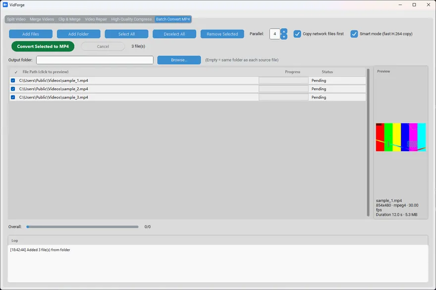
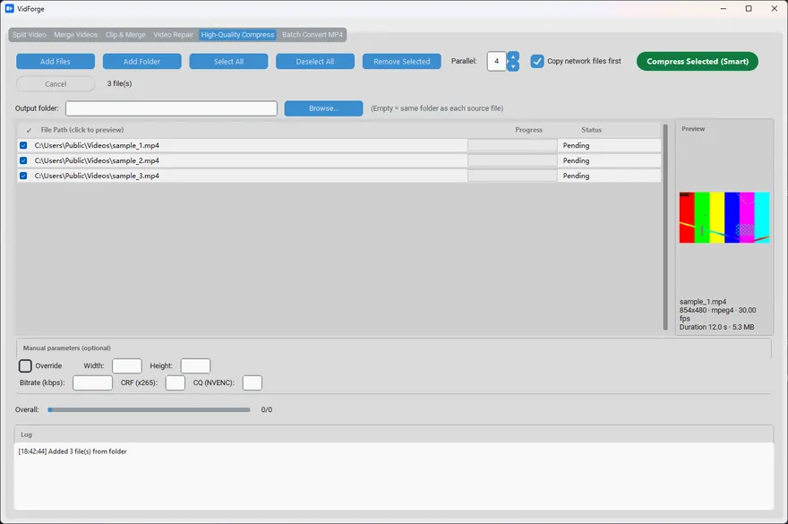

Neuf clips en MP4 en cinq secondes — sans ouvrir neuf boîtes de dialogue.
La plupart des applis vidéo sont pensées pour un clip à la fois : choisir un fichier, choisir un préréglage, choisir un nom de sortie, attendre, recommencer. VidForge est pensé pour le dossier. Déposez un lot entier, définissez le dossier de sortie une seule fois, et il décide fichier par fichier de ce qui a réellement besoin de travail — copie de flux quand le codec convient déjà, un vrai ré-encodage seulement quand ce n'est pas le cas — pendant que quatre fichiers s'exécutent en parallèle derrière une seule barre de progression.
Convertir, réparer, compresser, découper, fusionner, fractionner. Mêmes règles, même file, même journal.
Essai gratuit de 7 jours, tous les outils débloqués — puis 2,99 $ uniques. Sans compte, sans filigrane, sans quota d'envoi, et les vidéos ne quittent jamais votre PC. Pensé pour ceux qui traitent des dossiers : rushes de téléphone et caméra d'action, enregistrements d'écran, téléchargements interrompus, longs streams à couper en chapitres.

Les applis de montage optimisent un clip. Les lots sont un autre problème
Un lot n'est pas « la même tâche, répétée ». C'est une file d'entrées mélangées : certains fichiers sont déjà en H.264, d'autres sont en HEVC venus d'un téléphone, un a un conteneur à la fin cassée, trois doivent être assemblés, et tous doivent arriver dans le même dossier avec des noms sensés. Confier cela à un éditeur à timeline, c'est faire à la main la partie ennuyeuse — la gestion des fichiers — une boîte de dialogue à la fois.
🗂 La taxe des boîtes de dialogue
Exportez un dossier de 20 clips depuis un éditeur classique et vous confirmez vingt fois le même préréglage, le même débit et le même dossier de sortie. VidForge demande une fois, pour toute la file.
⏳ Ré-encoder ce qui n'en avait pas besoin
La moitié d'un lot classique est déjà au format cible. VidForge vérifie d'abord le codec et copie le flux ces fichiers — un clip de 45 secondes arrive en moins d'une seconde, à l'identique au bit près.
🧊 Attendre sur un seul cœur
Un export à la fois laisse la machine inutile. La file fait tourner 1 à 8 workers en parallèle avec progression par fichier, statut par fichier et un seul bouton d'annulation partagé.
Ce que « à règles » veut vraiment dire
Chaque onglet est un ensemble de règles, pas un assistant : quels fichiers, quoi faire de chacun, où va le résultat, et quoi faire quand l'entrée n'est pas idéale. Rien n'est décidé en silence — le journal affiche la décision prise pour chaque fichier.
| Tâche | La règle appliquée par VidForge |
|---|---|
| Convertir | H.264 dans un conteneur compatible MP4 → copie de flux. HEVC ou autre → ré-encodage de ce fichier uniquement. Audio non décodable → nouvelle tentative vidéo seule au lieu de faire échouer le lot. |
| Compresser | Estimation des bits par pixel selon résolution et cadence. Si le fichier a moins de ~10 % de marge, le fichier est ignoré — le ré-encodage ne coûterait que du temps et de la qualité. |
| Fusionner | Comparaison du codec, de la résolution, de la cadence (±0,01) et du format de pixel. Correspondance → concaténation sans perte. Divergence → ré-encodage pour que l'assemblage reste lisible. |
| Découper | Extraction de chaque segment par copie de flux, repli sur ré-encodage par segment, puis concaténation — ré-encodage complet seulement si la voie de copie échoue carrément. |
| Réparer | Reconstruction de l'index du conteneur par copie de flux. Ré-encodage seulement quand les horodatages sont irrécupérables. |
| Fractionner | Parties égales par nombre ; soit une coupe précise ré-encodée, soit une copie rapide par images-clés dans un sous-dossier par vidéo — jamais d'écrasement de la source. |
Fonctionnalités clés
Six outils, plus la machinerie de file qui les rend utilisables sur un dossier plutôt que sur un fichier.
⇄ Conversion par lots vers MP4
Ajoutez des fichiers ou un dossier entier, choisissez un dossier de sortie une fois, et convertissez la file avec copie intelligente / ré-encodage. Les rushs HEVC de téléphone deviennent du H.264 lisible partout, sans toucher aux clips déjà bons.
🛠 Réparation vidéo
Donnez-lui le résidu d'un téléchargement interrompu — .!qb, .part, .bc!, .xltd, .emule.td — et récupérez un MP4 lisible. Un clip de 45 secondes est réparé en environ une seconde, par copie de flux.
🗜 Compression haute qualité
Compression sensible à la qualité avec estimation bits-par-pixel : les clips qui ne peuvent pas rétrécir sont ignorés au lieu d'être abîmés. Réglage manuel de taille, débit, CRF ou NVENC CQ — et un récapitulatif du lot à la fin.
✂ Découpe & fusion
Ensembles de segments indépendants pour de nombreux fichiers à la fois, saisie compacte des temps (0101 = 00:01:01), réorganisation par glisser, alignement images-clés, repli GPU, et import / export JSON pour qu'une coupe répétitive devienne un préréglage réutilisable.
⇉ Fusion de vidéos
Assemblez des enregistrements en un fichier dans l'ordre voulu, avec nombre de répétitions, nom de sortie personnalisé, conteneur mp4 / mkv / mov, HEVC CPU optionnel, et conservation de tous les flux audio et sous-titres en copie.
⧉ Fractionnement vidéo
Fractionnement par nombre de parts avec préréglages, coupe précise optionnelle et sous-dossiers automatiques <name>_split pour qu'un long enregistrement soit découpé en chapitres sans collision.
⚡ Workers parallèles
De 1 à 8 fichiers à la fois derrière une file unique et une barre de progression unique. Statut par fichier (En attente / En cours / Terminé / Ignoré) et un bouton Annuler qui arrête proprement tout le lot.
🧠 Mode intelligent
Copier quand c'est possible, ré-encoder seulement si nécessaire, choisir le codec adapté à la cible, et conserver l'original quand une passe de compression ne gagnerait rien.
🔒 Hors ligne et privé
FFmpeg intégré, sans télémétrie, sans appels réseau, sans compte. Les journaux restent dans %LOCALAPPDATA%. Voir la Politique de confidentialité.
Voyez-le en action
Une seule session sans script : neuf clips mélangés convertis, quatre fichiers compressés, trois clips fusionnés et un téléchargement cassé réparé. L'horloge du journal est réelle — aucune accélération, seules les pauses entre étapes sont coupées.
Neuf fichiers, quatre à la fois
Les clips H.264 sont copiés en flux, le seul clip HEVC est ré-encodé, la file se vide en environ cinq secondes.
Une compression qui sait quand s'arrêter
Quatre clips en entrée, 2,86 Mo → 1,85 Mo en sortie — et le récapitulatif donne le gain exact par fichier.
Téléchargement cassé, réparé
Un résidu <code>.mp4.!qb</code> devient un MP4 lisible par copie de flux — les images intactes ne sont jamais ré-encodées.
Comment ça marche
Quatre étapes, et seules les deux premières changent selon le lot.
Tutoriel pas à pas
Chaque onglet dans l'ordre où vous l'utiliseriez, du dossier en désordre aux fichiers finis.

<name>_split.

00:10–00:25 ou compacte 0101. Réorganisez par glisser-déposer, gardez l'alignement sur images-clés pour la vitesse, et exportez le tout en JSON pour le réutiliser au prochain lot.

.!qb / .part / .bc! et appuyez sur Réparer la sélection. L'état passe à Réparé (copie de flux) ; le journal confirme le chemin et la taille de sortie. Utilisez Copier d'abord les fichiers réseau si la source est sur un NAS.Cas d'usage réels
Là où le traitement par lot économise un après-midi, pas une minute.
📱 Rushs de téléphone et caméra d'action
Les iPhones et les récents flagships Android enregistrent en HEVC. Un dossier de clips de vacances devient un dossier de MP4 H.264 lisibles partout — TV, autoradio, ancien éditeur — les fichiers déjà en H.264 passant intacts.
🧲 Téléchargements interrompus
qBittorrent laisse des <code>.!qb</code>, eMule des <code>.part</code>, les navigateurs des fichiers <code>.crdownload</code> frères. Si la vidéo elle-même était presque complète, ce résidu est récupérable — l'appli reconstruit l'index et vous gardez les images.
🎥 Enregistrements d'écran et streams
OBS et les outils de capture produisent des fichiers de 2 à 4 Go à couper en chapitres. Fractionnez par parts, ou découpez les segments intéressants d'une douzaine d'enregistrements en une passe avec un préréglage JSON.
🗄 Compression d'archives
Les grandes bibliothèques MP4 ont souvent 20 à 40 % de débit gaspillé. L'estimation bpp compresse ce qui a de la marge, ignore le reste, et affiche un récapitulatif « 35 % économisés » pour que vous sachiez que ça valait l'électricité.
🎬 Enregistrements en plusieurs parties
Les caméras qui s'arrêtent à 4 Go, ou les enregistrements coupés entre sessions, se réassemblent en un fichier sans ré-encodage quand les paramètres concordent — la qualité de l'original, un seul fichier en sortie.
🏫 Cours et réunions
Un semestre d'enregistrements de cours : compressez les lourds, fusionnez les séances en deux parties, fractionnez celles de trois heures par thème, et gardez des noms de sortie prévisibles.
Questions fréquentes
VidForge est-il gratuit ?
Les 7 premiers jours, oui — la fiche du Microsoft Store inclut un essai gratuit de 7 jours avec tous les outils débloqués. Ensuite c'est un paiement unique de 2,99 $ : sans abonnement, sans compte, sans filigrane et sans quota d'envoi.
Envoie-t-il mes vidéos quelque part ?
Non. Tout le traitement se fait sur une version intégrée de FFmpeg, dans l'application, sur votre machine. Aucune télémétrie et aucun accès réseau du tout — voir la Politique de confidentialité.
Pourquoi la conversion par lot est-elle si rapide ?
Parce que l'essentiel du travail est évité. Les fichiers déjà dans un flux compatible MP4 sont copiés en flux — sans décodage, sans encodage, sans changement de qualité — et seules les vraies conversions sont ré-encodées, en parallèle. Neuf clips mélangés terminés en environ cinq secondes dans la démo ci-dessus.
Va-t-il écraser ou modifier mes originaux ?
Jamais. Les résultats sont écrits dans le dossier de sortie que vous choisissez ; si vous le laissez vide, chaque résultat est écrit à côté de sa source, et les fractionnements créent toujours un sous-dossier par vidéo. Vos fichiers sources ne sont jamais que lus.
Peut-il réparer une vidéo à moitié téléchargée ?
En général, oui — tant que les octets téléchargés contiennent un flux lisible. VidForge reconstruit l'index du conteneur par copie de flux, avec repli sur ré-encodage si les horodatages sont irrécupérables. Il ne peut récupérer que ce qui a réellement été téléchargé : un fichier arrêté à 30 % sera lisible sur environ 30 % de sa durée.
La fusion ré-encode-t-elle et fait-elle perdre de la qualité ?
Seulement quand les entrées divergent. VidForge compare codec, résolution, cadence (tolérance ±0,01) et format de pixel ; s'ils concordent, les fichiers sont concaténés tels quels, donc la sortie est la même vidéo au bit près. Les entrées divergentes sont ré-encodées pour que le résultat reste lisible.
Dois-je installer FFmpeg ?
Non. FFmpeg et ffprobe sont intégrés à l'application. Rien n'est ajouté à votre PATH et rien n'est téléchargé à l'exécution.
Prend-il en charge HEVC / H.265 et NVENC ?
Oui. En mode intelligent, le H.264 est copié et le HEVC est ré-encodé en H.264 pour la compatibilité. Le NVENC matériel est détecté automatiquement pour la compression et les encodages de repli, et le x265 CPU est disponible en option.
Puis-je l'utiliser sur un portable sans GPU dédié ?
Oui. L'encodage matériel est optionnel — l'application replie vers libx264 / libx265. La copie de flux et la réparation n'ont pas besoin d'encodeur du tout, donc elles tournent à pleine vitesse sur graphiques intégrés.
Quelles sont les configurations requises ?
Windows 10 ou Windows 11, 64 bits. Environ 200 Mo de disque pour l'application et sa version de FFmpeg. Aucun GPU requis ; une carte NVIDIA dédiée accélère simplement la compression.
Comment obtenir de l'aide ?
Écrivez à 30329277@qq.com avec la version de l'application et, si possible, les dernières lignes du panneau de journal. Réponse habituelle en 24 à 48 heures.
Configuration requise
| Système | Windows 10 / Windows 11, 64 bits |
| Disque | ~200 Mo pour l'application et sa version de FFmpeg intégrée, plus la place pour vos sorties |
| GPU | Optionnel. NVENC est utilisé s'il est présent ; sinon x264 / x265 sur CPU |
| Réseau | Pas nécessaire du tout — sauf si vos fichiers sources sont sur un NAS (utilisez <i>Copier d'abord les fichiers réseau</i>) |
| Entrées | MP4, MOV, MKV, AVI et tout ce que le FFmpeg intégré sait décoder — téléchargements partiels inclus |
Obtenez l'application
VidForge est disponible dès maintenant sur le Microsoft Store pour Windows 10 et 11 (64 bits). L'essai gratuit de 7 jours est l'application complète — tous les outils débloqués, sans filigrane, sans limites — et après il se garde par un paiement unique de 2,99 $, payé une fois, sans abonnement. La fiche montre les captures, la configuration requise et le prix dans votre devise ; la Politique de confidentialité est publiée ici sur ce site.
Windows 10 / 11 · 64 bits Essai gratuit de 7 jours 2,99 $ une fois FFmpeg intégré Sans compte